Protocolos y modelos¶
1 Las reglas¶
1.2 Fundamentos de la comunicación¶
Las redes pueden variar en lo que respecta al tamaño, la forma y la función. Una red puede ser tan compleja como los dispositivos conectados a través de Internet, o tan simple como dos PC conectadas directamente entre sí mediante un único cable, o puede tener cualquier grado de complejidad intermedia.
Sin embargo, realizar simplemente la conexión física por cable o inalámbrica entre los terminales no es suficiente para habilitar la comunicación. Para que se produzca la comunicación, los dispositivos deben saber “cómo” comunicarse.
Las personas intercambian ideas mediante diversos métodos de comunicación. Sin embargo, todos los métodos de comunicación tienen tres elementos en común:
- Los orígenes de los mensajes - Los orígenes de los mensajes son las personas o los dispositivos electrónicos que deben enviar un mensaje a otras personas o dispositivos.
- Destino del mensaje(recibidor) - El destino recibe el mensaje y lo interpreta.
- Canal - está formado por los medios que proporcionan el camino por el que el mensaje viaja desde el origen hasta el destino.
1.3 Protocolos de comunicación¶
El envío de este mensaje, ya sea mediante comunicación cara a cara o a través de una red, está regido por reglas llamadas “protocolos”. Estos protocolos son específicos del tipo de método de comunicación en cuestión.
En nuestra comunicación personal diaria, las reglas que utilizamos para comunicarnos por un medio, como una llamada telefónica, no son necesariamente las mismas que los protocolos para utilizar otro medio, como enviar una carta.
El proceso de enviar una carta es similar a la comunicación que ocurre en las redes informáticas.
Analogía¶
Antes de comunicarse, deben acordar cómo hacerlo. Si en la comunicación se utiliza la voz, primero deben acordar el idioma. A continuación, cuando tienen un mensaje que compartir, deben poder dar formato a ese mensaje de una manera que sea comprensible.
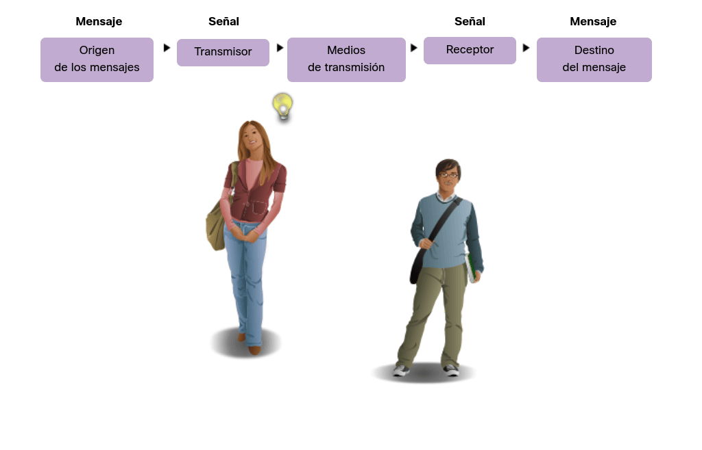
Si alguien utiliza el idioma español, pero la estructura de las oraciones es deficiente, el mensaje se puede malinterpretar fácilmente. Cada una de estas tareas describe protocolos implementados para lograr la comunicación.
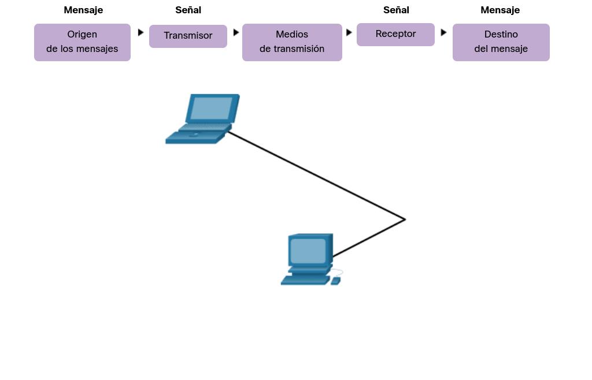
Como se muestra, también es cierto para la comunicación por computadora. Piense cuántas reglas o protocolos diferentes rigen todos los métodos de comunicación que existen actualmente en el mundo.
1.4 Establecimiento de reglas¶
Antes de comunicarse entre sí, las personas deben utilizar reglas o acuerdos establecidos que rijan la conversación. Considere este mensaje, por ejemplo:
humans communication between govern rules. It is verydifficult tounderstand messages that are not correctly formatted and donot follow the established rules and protocols. A estrutura da gramatica, da lingua, da pontuacao e do sentence faz a configuracao humana compreensivel por muitos individuos diferentes.
Observe cómo es difícil leer el mensaje porque no está formateado correctamente. Debe escribirse usando reglas (es decir, protocolos) que son necesarias para una comunicación efectiva. El ejemplo muestra el mensaje que ahora está correctamente formateado para el lenguaje y la gramática.
Rules govern communication between humans. It is very difficult to understand messages that are not correctly formatted and do not follow the established rules and protocols. The structure of the grammar, the language, the punctuation and the sentence make the configuration humanly understandable for many different individuals.
Los protocolos deben tener en cuenta los siguientes requisitos para entregar correctamente un mensaje que sea comprendido por el receptor:
- Un emisor y un receptor identificados
- Idioma y gramática común
- Velocidad y momento de entrega
- Requisitos de confirmación o acuse de recibo
1.5 Requisitos de protocolo de red¶
Los protocolos utilizados en las comunicaciones de red comparten muchos de estos fundamentos. Además de identificar el origen y el destino, los protocolos informáticos y de red definen los detalles sobre la forma en que los mensajes se transmiten a través de una red. Los protocolos informáticos comunes incluyen los siguientes requisitos:
- Codificación de los mensajes
- Formato y encapsulamiento del mensaje
- Tamaño del mensaje
- Sincronización del mensaje
- Opciones de entrega del mensaje
1.6 Codificación de los mensajes¶
Uno de los primeros pasos para enviar un mensaje es codificarlo. La codificación es el proceso mediante el cual la información se convierte en otra forma aceptable para la transmisión. La decodificación revierte este proceso para interpretar la idea.
Analogía¶
Imagine que una persona llama a un amigo para discutir los detalles de una hermosa puesta de sol.
Para comunicar el mensaje, ella convierte los pensamientos a un lenguaje acordado. Luego, dice las palabras utilizando los sonidos y las inflexiones del lenguaje oral que transmiten el mensaje. La otra persona escucha la descripción y decodifica los sonidos para entender el mensaje que recibió.
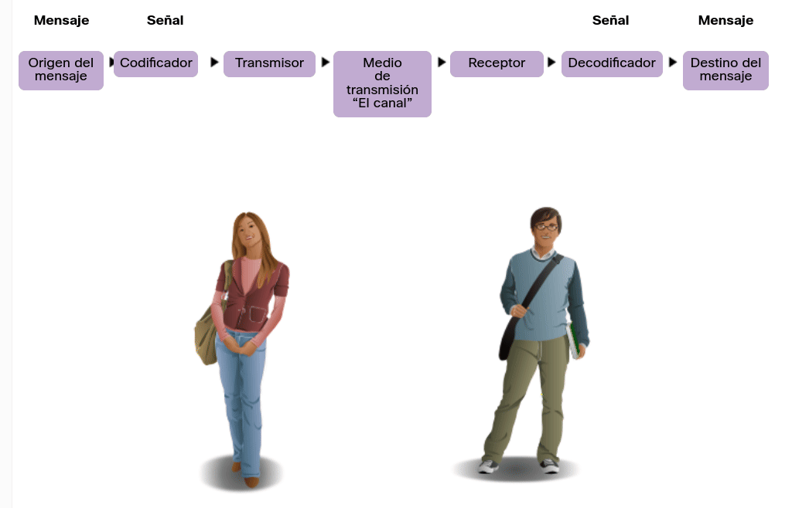
Red¶
La codificación entre hosts debe tener el formato adecuado para el medio. El host emisor, primero convierte en bits los mensajes enviados a través de la red. Cada bit está codificado en un patrón de voltajes en cables de cobre, luz infrarroja en fibras ópticas o microondas para sistemas inalámbricos. El host de destino recibe y decodifica las señales para interpretar el mensaje.
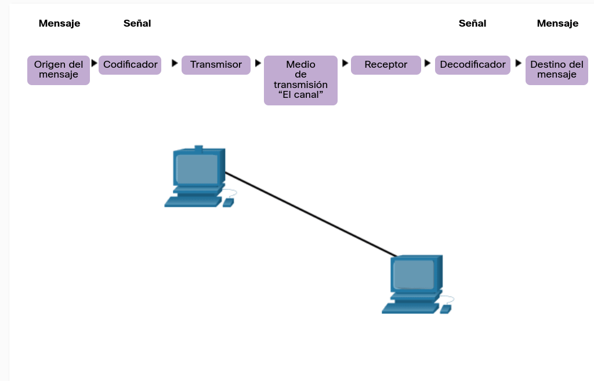
1.7 Formato y encapsulamiento del mensaje¶
Cuando se envía un mensaje desde el origen hacia el destino, se debe utilizar un formato o estructura específicos. Los formatos de los mensajes dependen del tipo de mensaje y el canal que se utilice para entregar el mensaje.
Analogía¶
Un ejemplo común de requerir el formato correcto en las comunicaciones humanas es cuando se envía una carta.
El sobre tiene la dirección del emisor y la del receptor, cada una escrita en el lugar adecuado del sobre. Si la dirección de destino y el formato no son correctos, la carta no se entrega.
El proceso que consiste en colocar un formato de mensaje (la carta) dentro de otro formato de mensaje (el sobre) se denomina encapsulamiento. La desencapsulación ocurre cuando el destinatario invierte el proceso y la carta se saca del sobre.
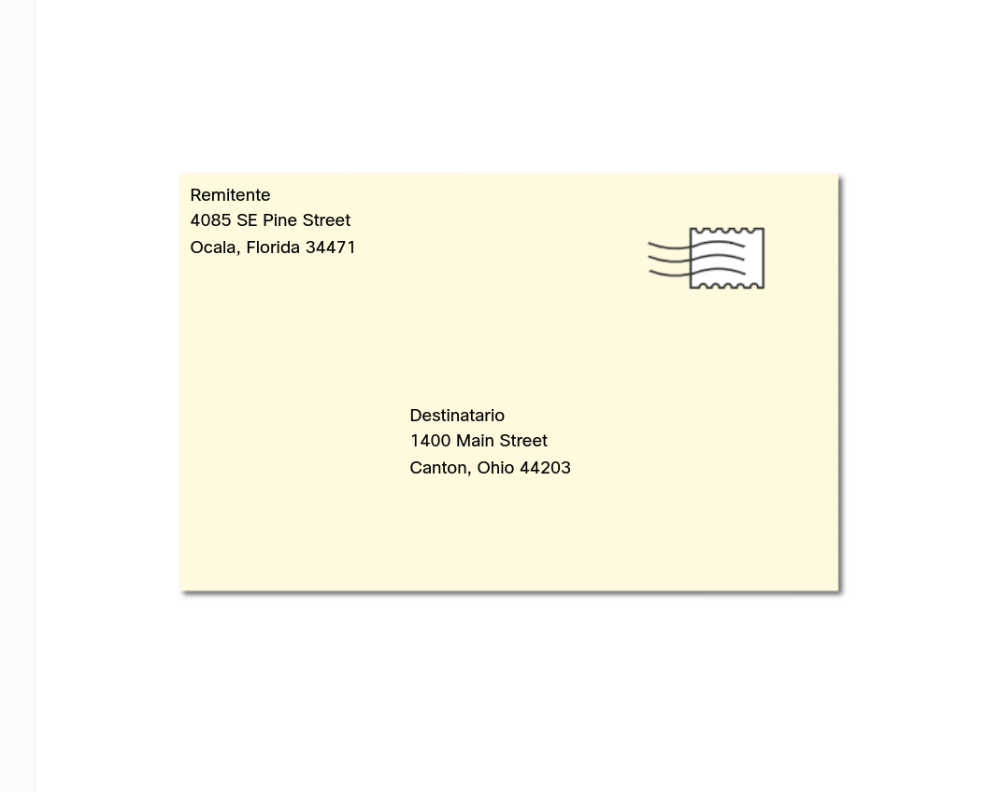
Red¶
Semejante a enviar una carta, un mensaje que se envía a través de una red de ordenadores sigue reglas de formato específicas para que pueda ser entregado y procesado.
El Protocolo de Internet (IP) es un protocolo con una función similar a la del ejemplo sobre.
En la figura, los campos del paquete de Protocolo de Internet versión 6 (IPv6) identifican el origen del paquete y su destino.
IP es responsable de enviar un mensaje desde el origen del mensaje al destino a través de una o más redes.
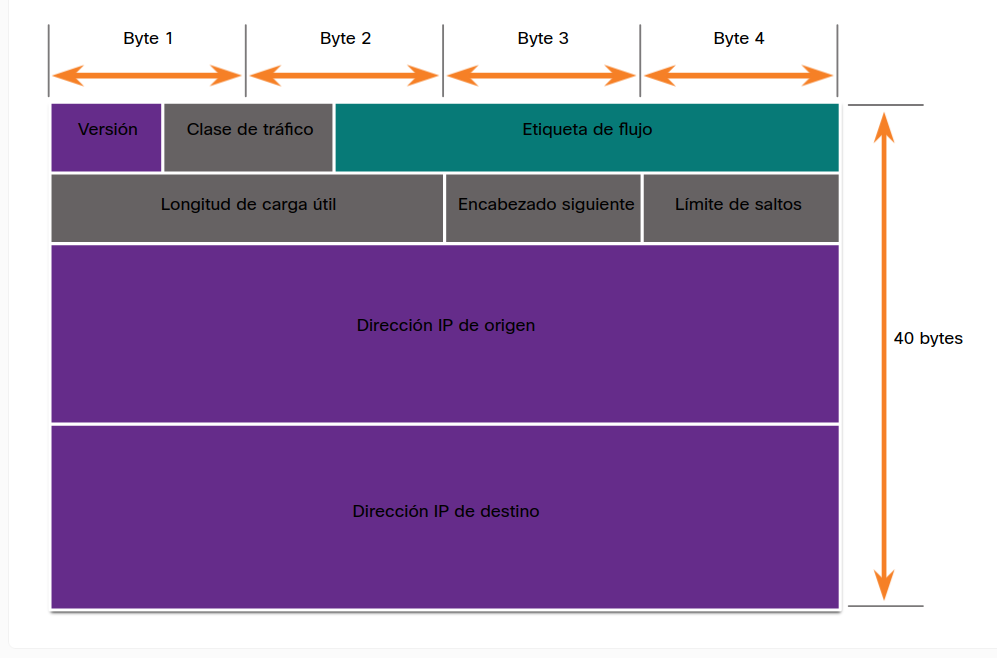
1.8 Tamaño del mensaje¶
Otra regla de comunicación es el +tamaño del mensaje*.
Analogía¶
Cuando las personas se comunican, los mensajes que envían, normalmente, están divididos en fragmentos más pequeños u oraciones. El tamaño de estas oraciones se limita a lo que la persona que recibe el mensaje puede procesar cada vez, como se muestra en la figura. También hace que sea más fácil para el receptor leer y comprender.
Red¶
De manera similar, cuando se envía un mensaje largo de un host a otro a través de una red, es necesario separarlo en partes más pequeñas. Las reglas que controlan el tamaño de las partes, o tramas que se comunican a través de la red, son muy estrictas. También pueden ser diferentes, de acuerdo con el canal utilizado. Las tramas que son demasiado largas o demasiado cortas no se entregan.
Las restricciones de tamaño de las tramas requieren que el host de origen divida un mensaje largo en fragmentos individuales que cumplan los requisitos de tamaño mínimo y máximo. El mensaje largo se enviará en tramas independientes, cada trama contendrá una parte del mensaje original. Cada trama también tendrá su propia información de direccionamiento. En el host receptor, las partes individuales del mensaje se vuelven a unir para reconstruir el mensaje original.
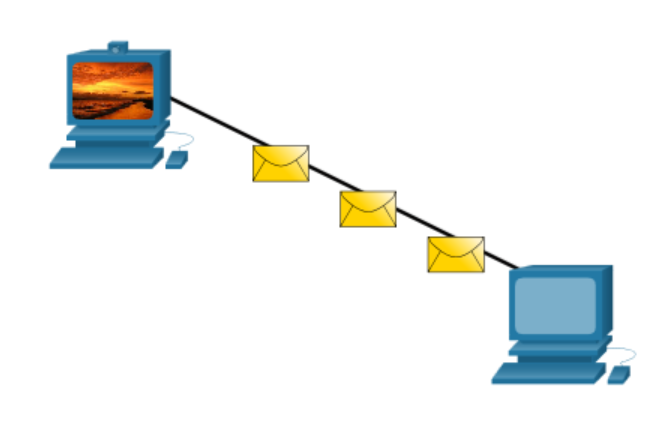
1.9 Sincronización del mensaje¶
El tiempo de los mensajes también es muy importante en las comunicaciones de red. El tiempo de los mensajes incluye lo siguiente:
- Control de flujo - Este es el proceso de gestión de la velocidad de transmisión de datos. La sincronización también afecta la cantidad de información que se puede enviar y la velocidad con la que puede entregarse. Por ejemplo, Si una persona habla demasiado rápido, la otra persona tendrá dificultades para escuchar y comprender el mensaje. En la comunicación de red, existen protocolos de red utilizados por los dispositivos de origen y destino para negociar y administrar el flujo de información.
- Tiempo de espera de respuesta (Response Timeout) - Si una persona hace una pregunta y no escucha una respuesta antes de un tiempo aceptable, la persona supone que no habrá ninguna respuesta y reacciona en consecuencia. La persona puede repetir la pregunta o puede continuar la conversación. Los hosts de las redes tienen reglas que especifican cuánto tiempo deben esperar una respuesta y qué deben hacer si se agota el tiempo de espera para la respuesta.
- El método de acceso - Determina en qué momento alguien puede enviar un mensaje.
En la figura se puede ver a dos personas hablando al mismo tiempo, luego se produce una "colisión de información" y es necesario que las dos retrocedan y comiencen de nuevo. Del mismo modo, cuando un dispositivo desea transmitir en una LAN inalámbrica, es necesario que la tarjeta de interfaz de red (NIC) WLAN determine si el medio inalámbrico está disponible.
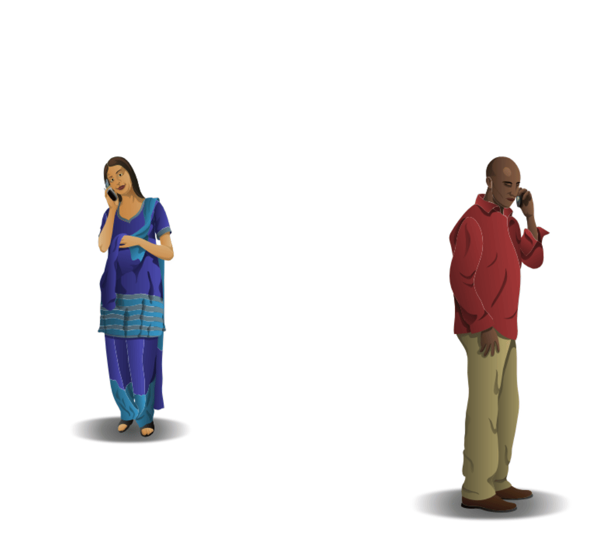
1.10 Opciones de entrega del mensaje¶
Un mensaje se puede entregar de diferentes maneras.
Analogía¶
En algunos casos, una persona desea comunicar información a un solo individuo. Otras veces, esa persona puede necesitar enviar información a un grupo de personas simultáneamente o, incluso, a todas las personas de un área.
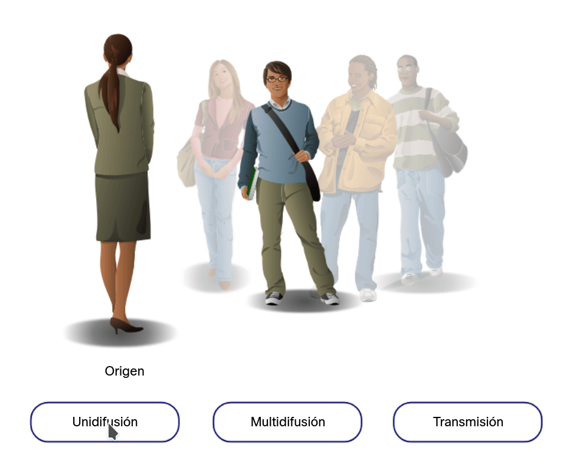
Red¶
Las comunicaciones de red tienen opciones de entrega similares para comunicarse. Como se muestra en la figura, hay tres tipos de comunicaciones de datos:
- Unicast - La información se transmite a un único dispositivo final.
- Multicast - La información se transmite a uno o varios dispositivos finales.
- Broadcast o transmisión - La información se transmite a todos los dispositivos finales.
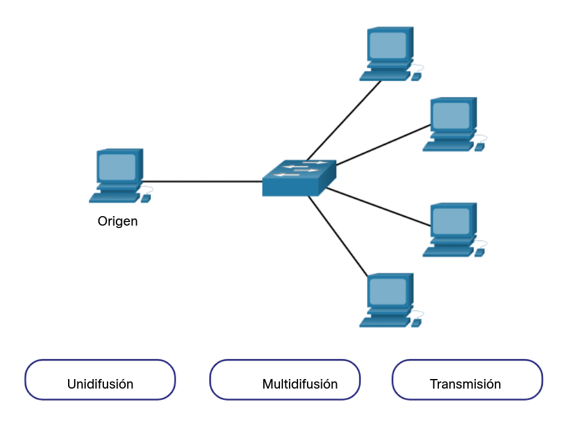
1.11 Una nota sobre el icono de nodo¶
Los documentos y topologías de red suelen representar dispositivos de red y finales mediante un icono de nodo. Los nodos se suelen representar como un círculo. La figura muestra una comparación de las tres opciones de entrega diferentes utilizando iconos de nodo en lugar de iconos de ordenador.
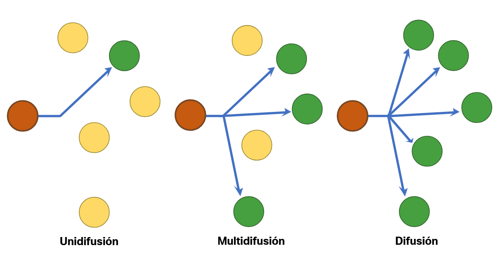
2 Protocolos¶
2.1 Descripción general del protocolo de red¶
Ya sabemos que para que los dispositivos finales puedan comunicarse a través de una red, cada dispositivo debe cumplir el mismo conjunto de reglas. Estas reglas se denominan protocolos y tienen muchas funciones en una red. En este tema se ofrece una descripción general de los protocolos de red.
Los protocolos de red definen un formato y un conjunto de reglas comunes para intercambiar mensajes entre dispositivos. Los protocolos son implementados por dispositivos finales y dispositivos intermedios en software, hardware o ambos. Cada protocolo de red tiene su propia función, formato y reglas para las comunicaciones.
En la tabla se enumeran los distintos tipos de protocolos que se necesitan para habilitar las comunicaciones en una o más redes.
| Tipo de protocolo | Descripción |
|---|---|
| Protocolos de comunicaciones de red | Los protocolos permiten que dos o más dispositivos se comuniquen a través de uno o más compatibles. La familia de tecnologías Ethernet implica una variedad de protocolos como IP, Protocolo de control de transmisión (TCP), HyperText Protocolo de transferencia (HTTP) y muchos más. |
| Protocolos de seguridad de red | Los protocolos protegen los datos para proporcionar autenticación, integridad de los datos y cifrado de datos. Ejemplos de protocolos seguros incluyen Secure Shell (SSH), Secure Sockets Layer (SSL) y Capa de transporte Security (TLS). |
| Protocolos de routing | Los protocolos permiten a los routers intercambiar información de ruta, comparar rutas y, a continuación, seleccionar la mejor ruta al destino en una red cableada o inalámbrica. Ejemplos de protocolos de enrutamiento incluyen Abrir ruta más corta primero (OSPF) y Protocolo de puerta de enlace de borde (BGP). |
| Protocolos de Detección de servicios | Los protocolos se utilizan para la detección automática de dispositivos o servicios. Entre los ejemplos de protocolos de descubrimiento de servicios se incluyen Dynamic Host Protocolo de configuración (DHCP), que descubre servicios para la dirección IP, y Sistema de nombres de dominio (DNS), que se utiliza para realizar traducción de nombre a dirección IP. |
2.2 Funciones de protocolo de red¶
Los protocolos de comunicación de red son responsables de una variedad de funciones necesarias para las comunicaciones de red entre dispositivos finales. Por ejemplo, en la figura, ¿cómo envía el equipo un mensaje, a través de varios dispositivos de red, al servidor?
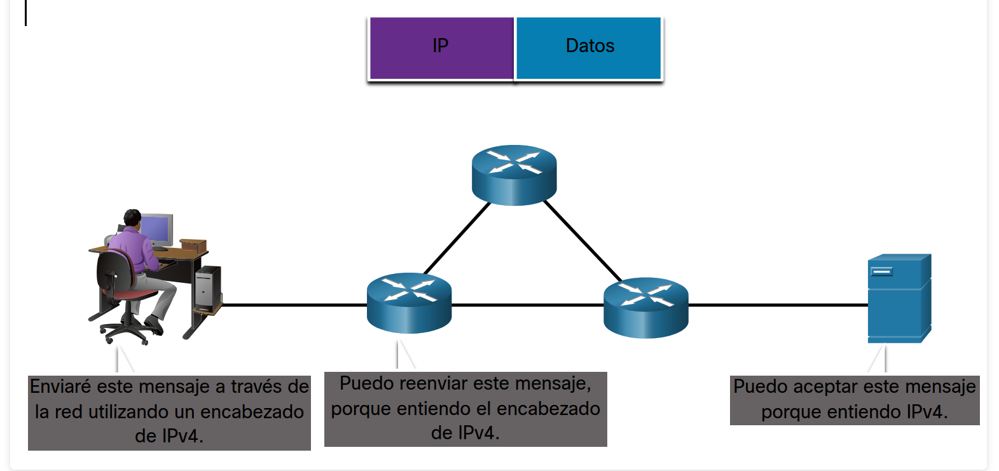
Los equipos y dispositivos de red utilizan protocolos acordados para comunicarse. La tabla enumera las funciones de estos protocolos.
| Función | Descripción |
|---|---|
| Direccionamiento | Esto identifica al remitente y al destinatario previsto del mensaje utilizando un esquema de direccionamiento definido. Ejemplos de protocolos que proporcionan incluyen Ethernet, IPv4 e IPv6. |
| Confiabilidad | Esta función proporciona mecanismos de entrega garantizados en caso de que los mensajes se pierdan o se corrompan en tránsito. TCP proporciona entrega garantizada. |
| Control de flujo | Esta función asegura que los datos fluyan a una velocidad eficiente entre dos dispositivos de comunicación. TCP proporciona servicios de control de flujo. |
| Secuenciación | Esta función etiqueta de forma única cada segmento de datos transmitido. Utiliza la información de secuenciación para volver a ensamblar la información correctamente. Esto es útil si se pierden los segmentos de datos, se retrasan o se reciben fuera de orden. TCP proporciona serv |
2.3 Interacción de protocolos¶
Un mensaje enviado a través de una red informática normalmente requiere el uso de varios protocolos, cada uno con sus propias funciones y formato. La figura muestra algunos protocolos de red comunes que se utilizan cuando un dispositivo envía una solicitud a un servidor web para su página web.
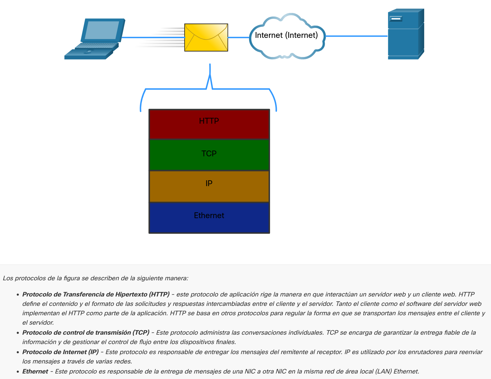
3 Suites de protocolos¶
1 Conjuntos de protocolos de red¶
En muchos casos, los protocolos deben poder trabajar con otros protocolos para que su experiencia en línea le proporcione todo lo que necesita para las comunicaciones de red. Los conjuntos de protocolos están diseñados para funcionar entre sí sin problemas.
Un grupo de protocolos interrelacionados que son necesarios para realizar una función de comunicación se denomina suite de protocolos.
Una de las mejores formas para visualizar el modo en que los protocolos interactúan dentro de una suite es ver la interacción como una pila. Una pila de protocolos muestra la forma en que los protocolos individuales se implementan dentro de una suite. Los protocolos se muestran en capas, donde cada servicio de nivel superior depende de la funcionalidad definida por los protocolos que se muestran en los niveles inferiores. Las capas inferiores de la pila se encargan del movimiento de datos por la red y proporcionan servicios a las capas superiores, las cuales se enfocan en el contenido del mensaje que se va a enviar.
Como se muestra en la figura, podemos utilizar capas para describir la actividad que tiene lugar en el ejemplo de comunicación cara a cara. En la capa inferior, la capa física, hay dos personas, cada una con una voz que puede pronunciar palabras en voz alta. En el medio está la capa de reglas que estipula los requisitos de comunicación incluyendo que se debe elegir un lenguaje común. En la parte superior está la capa de contenido y aquí es donde se habla realmente el contenido de la comunicación.
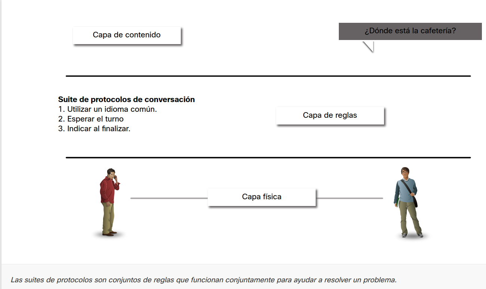
2 Evolución de los conjuntos de protocolos¶
Una suite de protocolos es un grupo de protocolos que trabajan en forma conjunta para proporcionar servicios integrales de comunicación de red. Desde la década de 1970 ha habido varios conjuntos de protocolos diferentes, algunos desarrollados por una organización de estándares y otros desarrollados por varios proveedores.
Durante la evolución de las comunicaciones de red e Internet hubo varios conjuntos de protocolos competidores, como se muestra en la figura.
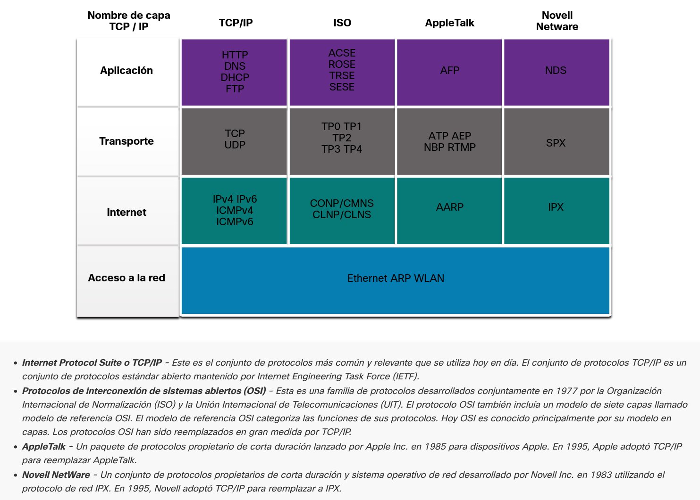
3 Ejemplo de protocolo TCP/IP¶
Los protocolos TCP/IP son específicos de las capas Aplicación, Transporte e Internet. No hay protocolos TCP/IP en la capa de acceso a la red.
Los protocolos LAN de capa de acceso a la red más comunes son los protocolos Ethernet y WLAN (LAN inalámbrica). Los protocolos de la capa de acceso a la red son responsables de la entrega de los paquetes IP en los medios físicos.
La figura muestra un ejemplo de los tres protocolos TCP/IP utilizados para enviar paquetes entre el navegador web de un host y el servidor web. HTTP, TCP e IP son los protocolos TCP/IP utilizados. En la capa de acceso a la red, Ethernet se utiliza en el ejemplo. Sin embargo, esto también podría ser un estándar inalámbrico como WLAN o servicio móvil.
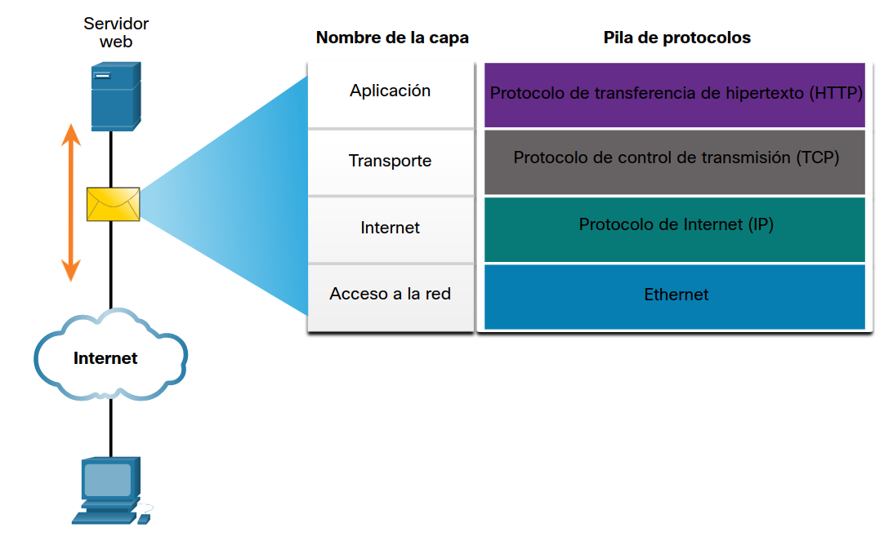
4 Conjunto de TCP/IP¶
Hoy en día, el conjunto de protocolos TCP/IP incluye muchos protocolos y continúa evolucionando para admitir nuevos servicios. Algunos de los más populares se muestran en la figura.
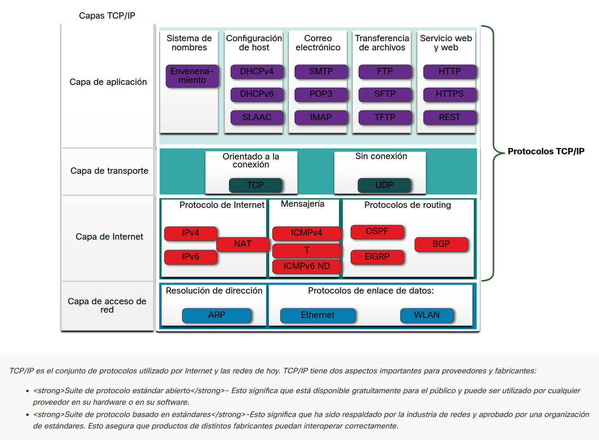
Capa de aplicación¶
- Sistema de nombres
- DNS - Domain Name System. Traduce los nombres de dominio tales como cisco.com a direcciones IP
- Configuración de host
- DHCPv4 - Protocolo de configuración dinámica de host para IPv4. Un servidor DHCPv4 asigna dinámicamente información de direccionamiento IPv4 a clientes DHCPv4 al inicio y permite que las direcciones se reutilicen cuando ya no sean necesarias.
- DHCPv6 - Protocolo de configuración dinámica de host para IPv6. DHCPv6 es similar a DHCPv4. Un servidor DHCPv6 asigna dinámicamente información de direccionamiento IPv6 a clientes DHCPv6 al inicio.
- SLAAC - Autoconfiguración sin estado. Método que permite a un dispositivo obtener su información de direccionamiento IPv6 sin utilizar un servidor DHCPv6.
- Correo electrónico
- SMTP - Protocolo para Transferencia Simple de Correo. Les permite a los clientes enviar correo electrónico a un servidor de correo y les permite a los servidores enviar correo electrónico a otros servidores.
- POP3 -Protocolo de Oficinca de Correo versión Permite a los clientes recuperar el correo electrónico de un servidor de correo y descargarlo en la aplicación de correo local del cliente.
- IMAP - Protocolo de Acceso a Mensajes de Internet Permite que los clientes accedan a correos electrónicos almacenados en un servidor de correo.
- Transferencia de Archivos
- FTP - Protocolo de Transferencia de Archivos. Establece las reglas que permiten a un usuario en un host acceder y transferir archivos hacia y desde otro host a través de una red. FTP Es un protocolo confiable de entrega de archivos, orientado a la conexión y con acuse de recibo.
- SFTP - SSH Protocolo de Transferencia de Archivos Como una extensión al protocolo Shell seguro (SSH), el SFTP se puede utilizar para establecer una sesión segura de transferencia de archivos, en el que el archivo transferido está cifrado. SSH es un método para el inicio de sesión remoto seguro que se utiliza normalmente para acceder a la línea de comandos de un dispositivo.
- TFTP - Protocolo de Transferencia de Archivos Trivial Un protocolo de transferencia de archivos simple y sin conexión con la entrega de archivos sin reconocimiento y el mejor esfuerzo posible. Utiliza menos sobrecarga que FTP.
- Web y Servicio Web
- HTTP - Hypertext Transfer Protocol. Un Conjunto de reglas para intercambiar texto, imágenes gráficas, sonido, video y otros archivos multimedia en la World Wide Web.
- HTTPS - HTTP seguro. Una forma segura de HTTP que cifra los datos que se intercambian a través de la World Wide Web.
- REST - Transferencia de Estado Representacional. Servicio web que utiliza interfaces de programación de aplicaciones (API) y solicitudes HTTP para crear aplicaciones web.
Capa de transporte¶
- Orientado a la conexión
- TCP - Protocolo de Control de Transmisión. Permite la comunicación confiable entre procesos que se ejecutan en hosts independientes y tiene transmisiones fiables y con acuse de recibo que confirman la entrega exitosa.
- Sin conexión
- UDP - Protocolo de Datagramas de Usuario Habilita un proceso que se ejecuta en un host para enviar paquetes a un proceso que se ejecuta en otro host Sin embargo, UDP No confirma la transmisión correcta de datagramas
Capa de Internet¶
- Protocolo de Internet
- IPv4 - Protocolo de Internet versión 4. Recibe segmentos de mensajes de la capa de transporte, empaqueta mensajes en paquetes y dirige paquetes para entrega end-to-end a través de una red. IPv4 utiliza una dirección de 32 bits.
- IPv6 - IP versión 6. Similar a IPv4 pero usa una dirección de 128 bits.
- NAT - Traducción de Direcciones de Red Traduce las direcciones IPv4 de una red privada en direcciones IPv4 públicas globalmente únicas.
- Mensajería
- ICMPv4 - Protocolo de Control de Mensajes de Internet Proporciona comentarios desde un host de destino a un host de origen con respecto a los errores en la entrega de paquetes
- ICMPv6 - ICMP para IPv6. Funcionalidad similar a ICMPv4 pero se utiliza para paquetes IPv6. ICMPv6 ND - Protocolo de Descubrimiento de Vecinos versión 6 Incluye cuatro mensajes de protocolo que se utilizan para la resolución de direcciones y la detección de direcciones duplicadas.
- Protocolos de Routing
- OSPF - Abrir el Camino más Corto Primero. Protocolo de enrutamiento de estado de vínculo que utiliza un diseño jerárquico basado en áreas. OSPF s un protocolo de routing interior de estándar abierto.
- EIGRP - EIGRP Protocolo de Enrutamiento de Puerta de enlace Interior Mejorado. Es un protocolo de routing abierto desarrollado por Cisco, utiliza una métrica compuesta en función del ancho de banda, la demora, la carga y la confiabilidad.
- BGP - Protocolo de Puerta de Enlace de Frontera Un protocolo de enrutamiento de puerta de enlace exterior estándar abierto utilizado entre los proveedores de servicios de Internet (ISP). BGP también se utiliza entre los ISP y sus clientes privados más grandes para intercambiar información de enrutamiento.
Capa de Acceso de Red¶
- Resolución de dirección
-
ARP - Protocolo de Resolución de Direcciones Proporciona la asignación de direcciones dinámicas entre una dirección IP y una dirección de hardware.
Nota: Puede ver en otras documentos que ARP opera en la capa de Internet (OSI Capa 3). Sin embargo, en este curso declaramos que ARP opera en la capa de acceso a la red (OSI Capa 2) porque su objetivo principal es descubrir la dirección MAC del destino. y una dirección de capa 2 es una dirección MAC. - Protocolos de Enlace de Datos: - Ethernet - define las reglas para conectar y señalizar estándares de la capa de acceso a la red. - WLAN - Wireless Local Area Network. Define las reglas para la señalización inalámbrica a través de las frecuencias de radio de 2,4 GHz y 5 GHz.
5 Proceso de comunicación TCP/IP¶
Las imágenes muestran el proceso de comunicación completo mediante un ejemplo de servidor web que transmite datos a un cliente.
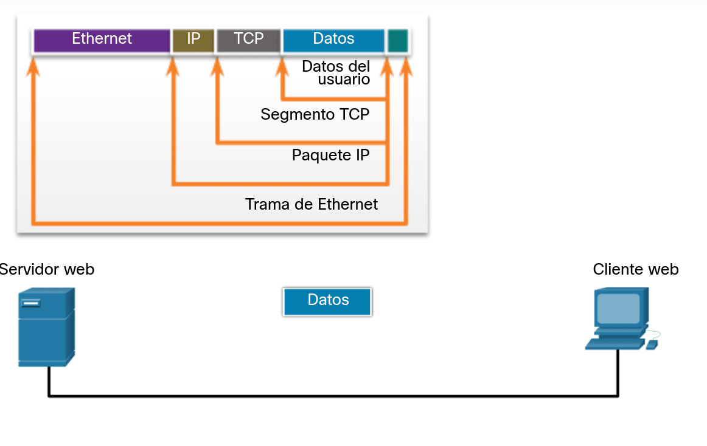
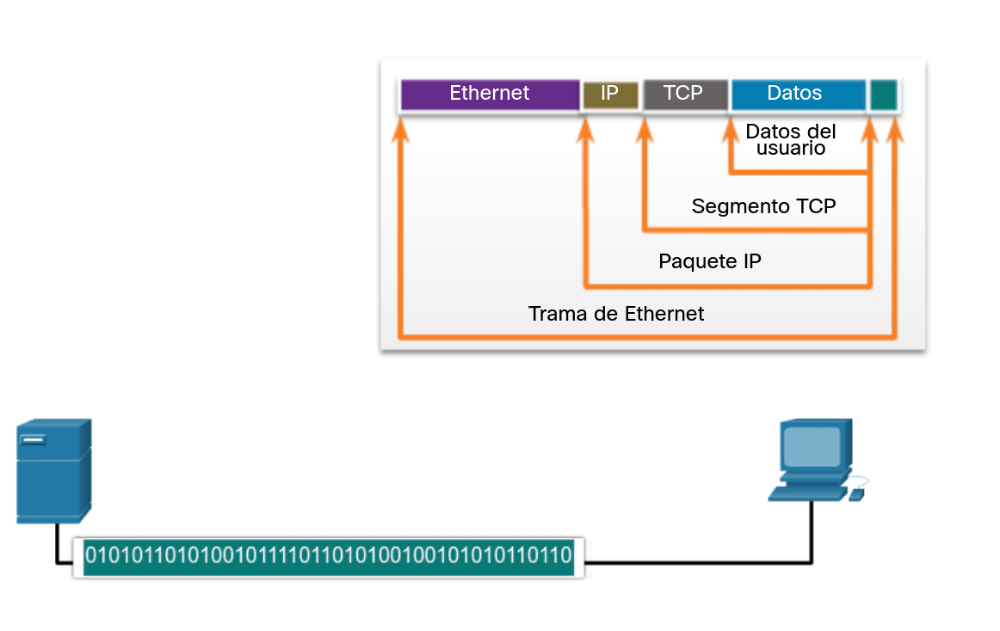
4 Organizaciones de estándares¶
4.1 Estándares abiertos¶
Al comprar neumáticos nuevos para un automóvil, hay muchos fabricantes que puede elegir. Cada uno de ellos tendrá al menos un tipo de neumático que se adapte a su coche. Esto se debe a que la industria automotriz utiliza estándares cuando se producen automóviles. Es lo mismo con los protocolos. Debido a que hay muchos fabricantes diferentes de componentes de red, todos deben usar los mismos estándares. En el establecimiento de redes, las normas son elaboradas por organizaciones internacionales de normalización.
Los estándares abiertos fomentan la interoperabilidad, la competencia y la innovación. También garantizan que ningún producto de una sola empresa pueda monopolizar el mercado o tener una ventaja desleal sobre la competencia.
La compra de un router inalámbrico para el hogar constituye un buen ejemplo de esto. Existen muchas opciones distintas disponibles de diversos proveedores, y todas ellas incorporan protocolos estándares, como IPv4, DHCP, 802.3 (Ethernet) y 802.11 (LAN inalámbrica). Estos estándares abiertos también permiten que un cliente con el sistema operativo OS X de Apple descargue una página web de un servidor web con el sistema operativo Linux. Esto se debe a que ambos sistemas operativos implementan los protocolos de estándar abierto, como los de la suite TCP/IP.
Las organizaciones de estandarización generalmente son organizaciones sin fines de lucro y neutrales en lo que respecta a proveedores, que se establecen para desarrollar y promover el concepto de estándares abiertos. Las organizaciones de estandarización son importantes para mantener una Internet abierta con especificaciones y protocolos de libre acceso que pueda implementar cualquier proveedor.
Las organizaciones de estandarización pueden elaborar un conjunto de reglas en forma totalmente independiente o, en otros casos, pueden seleccionar un protocolo exclusivo como base para el estándar. Si se utiliza un protocolo exclusivo, suele participar el proveedor que creó el protocolo.
La figura muestra el logotipo de cada organización de normas.
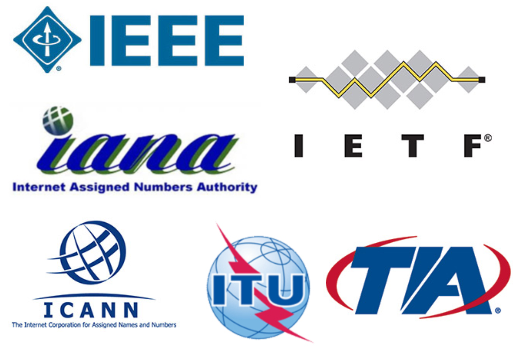
4.2 Estándares de Internet¶
Distintas organizaciones tienen diferentes responsabilidades para promover y elaborar estándares para el protocolo TCP/IP.
La figura muestra las organizaciones de estándares involucradas con el desarrollo y soporte de Internet.
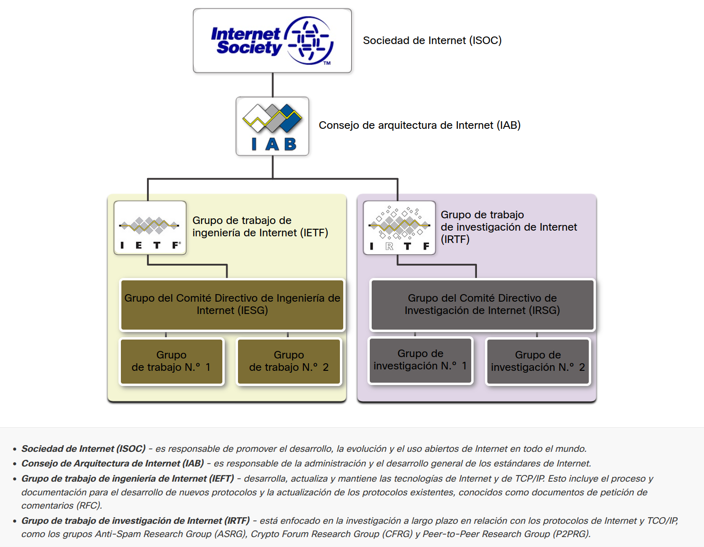
La siguiente figura muestra las organizaciones de estándares involucradas en el desarrollo y soporte de TCP/IP e incluyen IANA e ICANN.
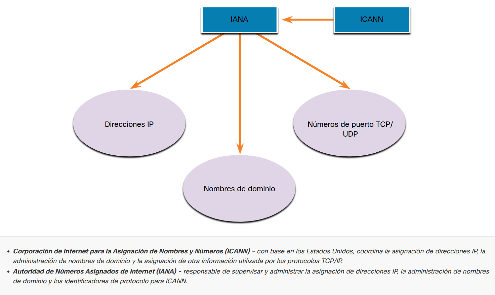
4.3 Organizaciones de estándares para comunicaciones y electrónica¶
Otras organizaciones de estandarización tienen responsabilidades de promoción y creación de estándares de comunicación y electrónica que se utilizan en la entrega de paquetes IP como señales electrónicas en medios inalámbricos o por cable.
Estas organizaciones estándar incluyen las siguientes:
- Institute of Electrical and Electronics Engineers (IEEE, pronounced “I-triple-E”): organización de electrónica e ingeniería eléctrica dedicada a avanzar en innovación tecnológica y a elaborar estándares en una amplia gama de sectores, que incluyen energía, servicios de salud, telecomunicaciones y redes. Los estándares importantes de red IEEE incluyen 802.3 Ethernet y 802.11 WLAN
- Asociación de Industrias Electrónicas (EIA): es conocida principalmente por sus estándares relacionados con el cableado eléctrico, los conectores y los racks de 19 pulgadas que se utilizan para montar equipos de red.
- Asociación de las Industrias de las Telecomunicaciones (TIA): es responsable de desarrollar estándares de comunicación en diversas áreas, entre las que se incluyen equipos de radio, torres de telefonía móvil, dispositivos de voz sobre IP (VoIP), comunicaciones satelitales y más. La figura muestra un ejemplo de un cable Ethernet certificado que fue desarrollado cooperativamente por la TIA y la EIA.
- Sector de Normalización de las Telecomunicaciones de la Unión Internacional de Telecomunicaciones (UIT-T): es uno de los organismos de estandarización de comunicación más grandes y más antiguos. El UIT-T define estándares para la compresión de vídeos, televisión de protocolo de Internet (IPTV) y comunicaciones de banda ancha, como la línea de suscriptor digital (DSL).
5 Modelos de referencia¶
5.1 Beneficios del uso de un modelo en capas¶
En realidad no se puede ver que los paquetes reales viajan a través de una red real. Una analogía es verlo como la forma en que se ven componentes de un coche que se ensamblan en una línea de ensamble.
Por lo tanto, usar un modelo ayuda a interpretar la red de forma que podamos imaginar lo que está sucediendo.
Conceptos complejos, como el funcionamiento de una red, pueden ser difíciles de explicar y comprender. Por esta razón, un modelo en capas se utiliza para modularizar las operaciones de una red en capas manejables.
Los beneficios del uso de un modelo en capas para describir protocolos de red y operaciones incluyen:
- Ayuda en el diseño de protocolos, ya que los protocolos que operan en una capa específica tienen información definida según la cual actúan, y una interfaz definida para las capas superiores e inferiores.
- Fomenta la competencia, ya que los productos de distintos proveedores pueden trabajar en conjunto.
- Evita que los cambios en la tecnología o en las funcionalidades de una capa afecten a otras capas superiores e inferiores.
- Proporciona un lenguaje común para describir las funciones y capacidades de red.
Como se muestra en la figura, hay dos modelos en capas que se utilizan para describir las operaciones de red:
- El modelo de referencia de interconexión de sistemas abiertos OSI.
- El Modelo de referencia TCP/IP
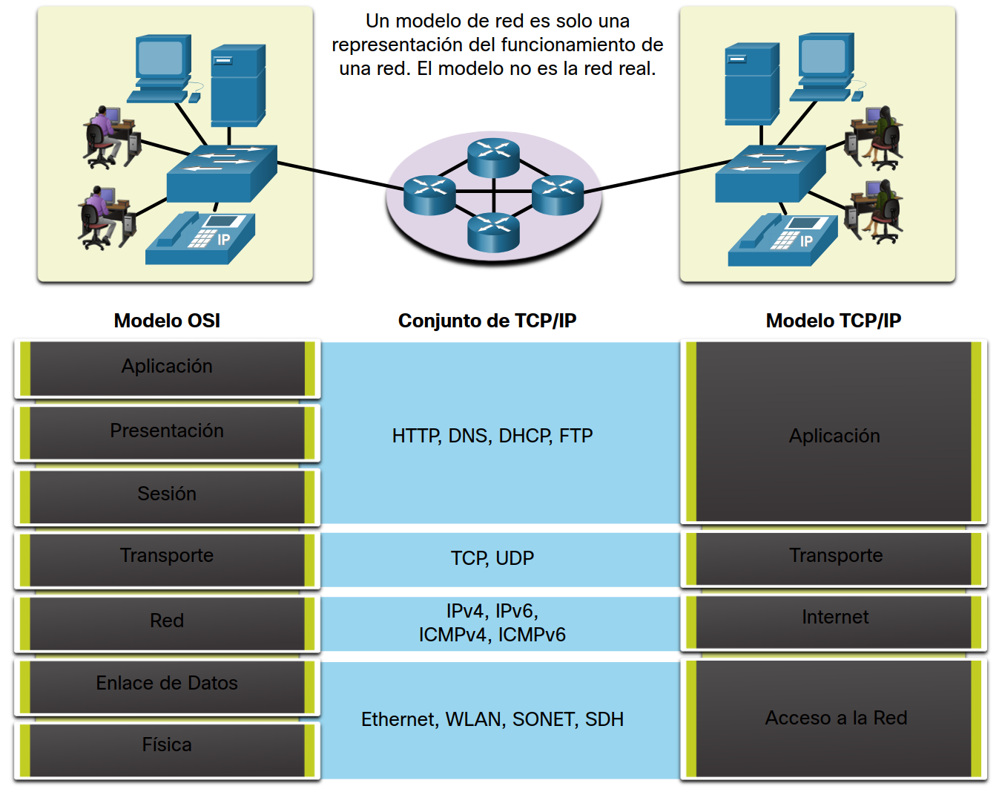
5.2 El modelo de referencia OSI¶
El modelo de referencia OSI proporciona una amplia lista de funciones y servicios que se pueden presentar en cada capa. este tipo de modelo es coherente con todos los tipos de servicios y protocolos de red al describir qué es lo que se debe hacer en una capa determinada, pero sin regir la forma en que se debe lograr.
También describe la interacción de cada capa con las capas directamente por encima y por debajo de él. Los protocolos TCP/IP que se analizan en este curso se estructuran en torno a los modelos OSI y TCP/IP. La tabla muestra detalles sobre cada capa del modelo OSI. La funcionalidad de cada capa y la relación entre ellas será más evidente a medida que avance en el curso y que se brinden más detalles acerca de los protocolos.
| Capa del modelo OSI | Descripción |
|---|---|
| 7 - Aplicación | La capa de aplicación contiene protocolos utilizados para comunicaciones proceso a proceso de comunicaciones. |
| 6 - Presentación | La capa de presentación proporciona una representación común de los datos transferidos entre los servicios de capa de aplicación. |
| 5 - Sesión | La capa de sesión proporciona servicios a la capa de presentación para organizar el diálogo y administrar el intercambio de datos. |
| 4 - Transporte | La capa de transporte define servicios para segmentar, transferir y volver a montar los datos para las comunicaciones individuales entre los extremos. |
| 3 - Red | La capa de red proporciona servicios para intercambiar las piezas individuales de datos a través de la red entre los dispositivos finales identificados. |
| 2 - Enlace de datos | Los protocolos de la capa de enlace de datos describen métodos para intercambiar datos (tramas) entre dispositivos a través de un medio común. |
| 1 - Física | Los protocolos de capa física describen los componentes mecánicos, eléctricos, funcionales y de procedimiento para activar, mantener y desactivar conexiones físicas para una transmisión de bits hacia y desde una red de dispositivos. |
Nota: mientras las capas del modelo TCP/IP se mencionan solo por el nombre, las siete capas del modelo OSI se mencionan con frecuencia por número y no por nombre. Por ejemplo, la capa física se conoce como Capa 1 del modelo OSI, la capa de enlace de datos es Layer2, y así sucesivamente.
5.3 Modelo de protocolo TCP/IP¶
El modelo de protocolo TCP/IP para comunicaciones de internetwork se creó a principios de la década de los setenta y se conoce con el nombre de modelo de Internet. Este tipo de modelo coincide con precisión con la estructura de una suite de protocolos determinada. El modelo TCP/IP es un protocolo modelo porque describe las funciones que ocurren en cada capa de protocolos dentro de una suite de TCP/IP. TCP/IP también es un ejemplo de un modelo de referencia. La tabla muestra detalles sobre cada capa del modelo OSI.
| Capa del modelo TCP/IP | Descripción |
|---|---|
| 4 - Aplicación | Representa datos para el usuario más el control de codificación y de diálogo. |
| 3 - Transporte | Admite la comunicación entre distintos dispositivos a través de diversas redes. |
| 2 - Internet | Determina el mejor camino a través de una red. |
| 1 - Acceso a la red | Controla los dispositivos del hardware y los medios que forman la red. |
Las definiciones del estándar y los protocolos TCP/IP se explican en un foro público y se definen en un conjunto de documentos de petición de comentarios (RFC) disponibles al público. Un RFC es creado por ingenieros de redes y enviado a otros miembros de IETF para comentarios.
5.4 Comparación del modelo OSI y el modelo TCP/IP¶
Los protocolos que forman la suite de protocolos TCP/IP pueden describirse en términos del modelo de referencia OSI. En el modelo OSI, la capa de acceso a la red y la capa de aplicación del modelo TCP/IP están subdivididas para describir funciones discretas que deben producirse en estas capas.
En la capa de acceso a la red, la suite de protocolos TCP/IP no especifica cuáles protocolos utilizar cuando se transmite por un medio físico; solo describe la transferencia desde la capa de Internet a los protocolos de red física. Las capas OSI 1 y 2 tratan los procedimientos necesarios para acceder a los medios y las maneras físicas de enviar datos por la red.
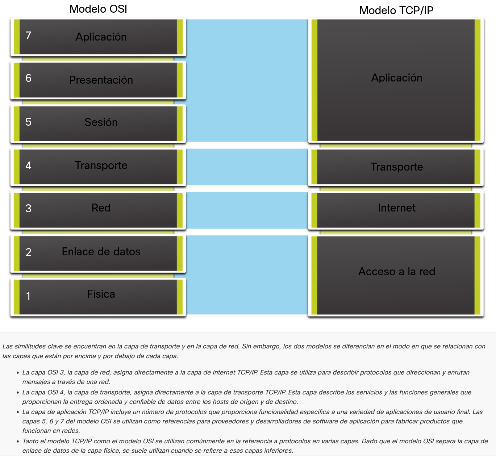
6 Encapsulamiento de datos¶
6.1 Segmentación del mensaje¶
Conocer el modelo de referencia OSI y el modelo de protocolo TCP/IP será útil cuando aprenda acerca de cómo se encapsulan los datos a medida que se mueven a través de una red. No es tan simple como una carta física que se envía a través del sistema de correo.
En teoría, una comunicación simple, como un vídeo musical o un correo electrónico puede enviarse a través de la red desde un origen hacia un destino como una transmisión de bits masiva y continua. Sin embargo, esto crearía problemas para otros dispositivos que necesitan utilizar los mismos canales de comunicación o enlaces. Estas grandes transmisiones de datos originarán retrasos importantes. Además, si falla un enlace en la infraestructura de la red interconectada durante la transmisión, el mensaje completo se perdería y tendría que retransmitirse completamente.
Un método mejor es dividir los datos en partes más pequeñas y manejables para enviarlas por la red. La segmentación es el proceso de dividir un flujo de datos en unidades más pequeñas para transmisiones a través de la red.
La segmentación es necesaria porque las redes de datos utilizan el conjunto de protocolos TCP/IP para enviar datos en paquetes IP individuales. Cada paquete se envía por separado, similar al envío de una carta larga como una serie de postales individuales. Los paquetes que contienen segmentos para el mismo destino se pueden enviar a través de diferentes rutas.
La segmentación de mensajes tiene dos beneficios principales.
- Aumenta la velocidad - Debido a que un flujo de datos grande se segmenta en paquetes, se pueden enviar grandes cantidades de datos a través de la red sin atar un enlace de comunicaciones. Esto permite que muchas conversaciones diferentes se intercalen en la red en un mecanismo llamado multiplexación.
- Aumenta la eficiencia - si un solo segmento no llega a su destino debido a una falla en la red o congestión de la red, solo ese segmento necesita ser retransmitido en lugar de volver a enviar toda la secuencia de datos.
Veamos con animaciones la segmentación:
Y la multiplexación
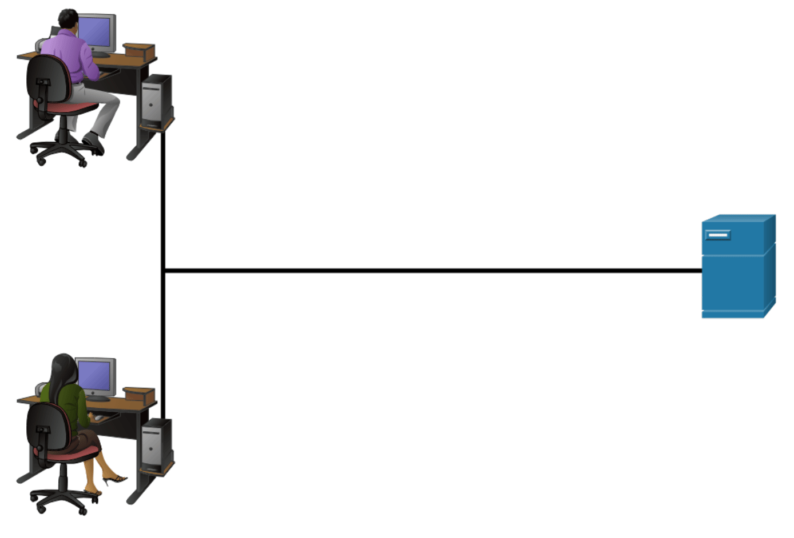
6.2 Secuenciación¶
La desventaja de utilizar segmentación y multiplexión para transmitir mensajes a través de la red es el nivel de complejidad que se agrega al proceso. Supongamos que tuviera que enviar una carta de 100 páginas, pero en cada sobre solo cabe una. Por lo tanto, se necesitarían 100 sobres y cada sobre tendría que dirigirse individualmente. Es posible que la carta de 100 páginas en 100 sobres diferentes llegue fuera de pedido. En consecuencia, la información contenida en el sobre tendría que incluir un número de secuencia para garantizar que el receptor pudiera volver a ensamblar las páginas en el orden adecuado.
En las comunicaciones de red, cada segmento del mensaje debe seguir un proceso similar para asegurar que llegue al destino correcto y que puede volverse a ensamblar en el contenido del mensaje original, como se muestra en la figura 2. TCP es responsable de secuenciar los segmentos individuales.
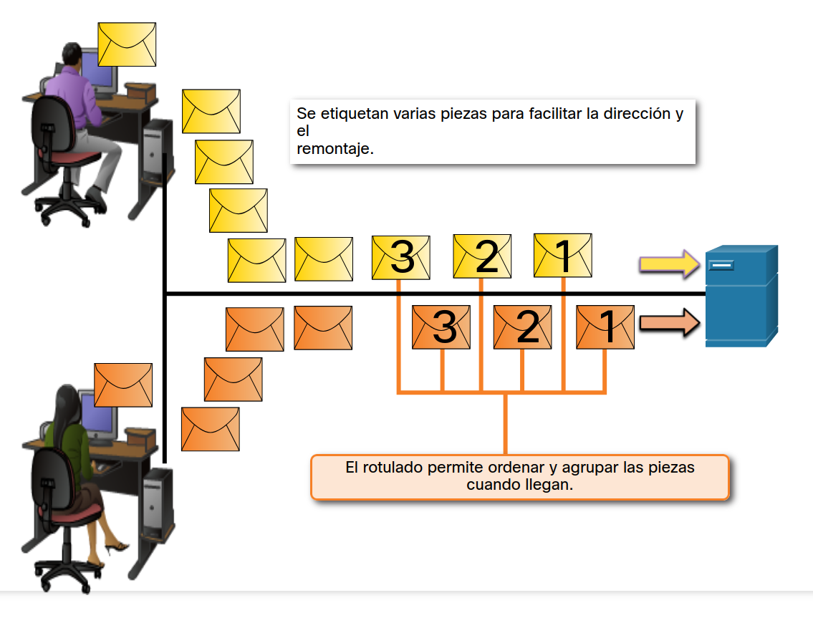
6.3 Unidades de datos de protocolo¶
Mientras los datos de la aplicación bajan a la pila del protocolo y se transmiten por los medios de la red, se agrega diversa información de protocolos en cada nivel. Esto comúnmente se conoce como proceso de encapsulamiento.
Nota: Aunque la PDU UDP se denomina datagrama, los paquetes IP a veces también se conocen como datagramas IP.
La manera que adopta una porción de datos en cualquier capa se denomina unidad de datos del protocolo (PDU).
Durante el encapsulamiento, cada capa encapsula las PDU que recibe de la capa inferior de acuerdo con el protocolo que se utiliza. En cada etapa del proceso, una PDU tiene un nombre distinto para reflejar sus funciones nuevas. Aunque no existe una convención universal de nombres para las PDU, en este curso se denominan de acuerdo con los protocolos de la suite TCP/IP. Las PDU de cada tipo de datos se muestran en la figura.
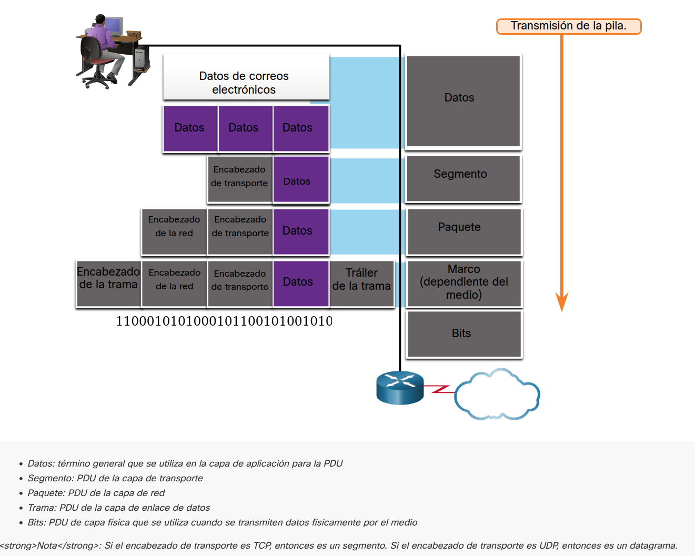
6.4 Proceso de encapsulamiento¶
Cuando se envían mensajes en una red, el proceso de encapsulamiento opera desde las capas superiores hacia las capas inferiores. En cada capa, la información de la capa superior se considera como datos en el protocolo encapsulado. Por ejemplo, el segmento TCP se considera como datos en el paquete IP.
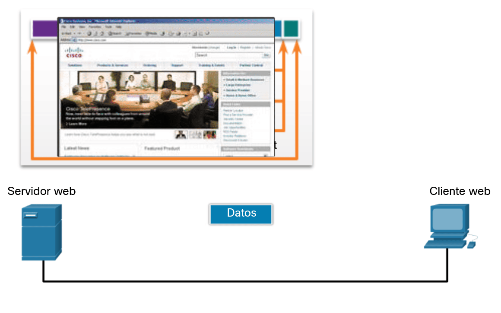
6.5 Proceso de desencapsulamiento¶
Este proceso se invierte en el host receptor, y se conoce como desencapsulamiento. El desencapsulamiento es el proceso que utilizan los dispositivos receptores para eliminar uno o más de los encabezados de protocolo. Los datos se desencapsulan mientras suben por la pila hacia la aplicación del usuario final.
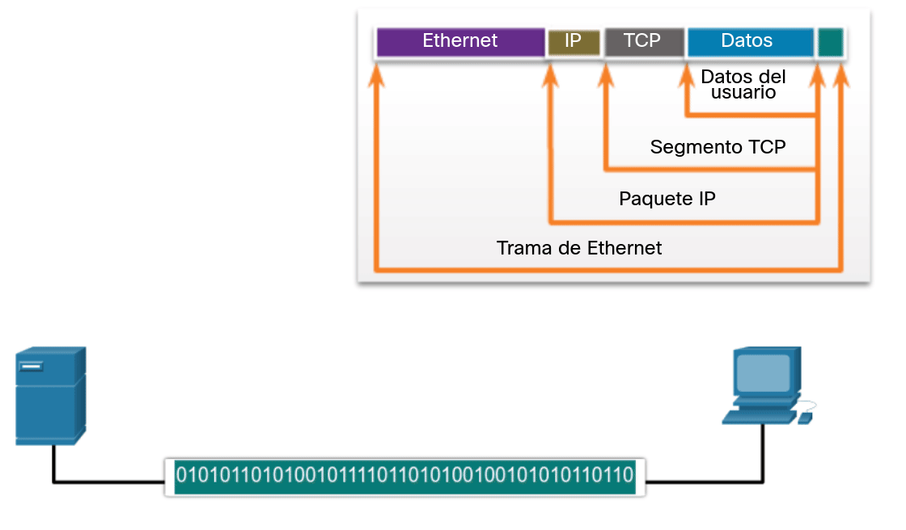